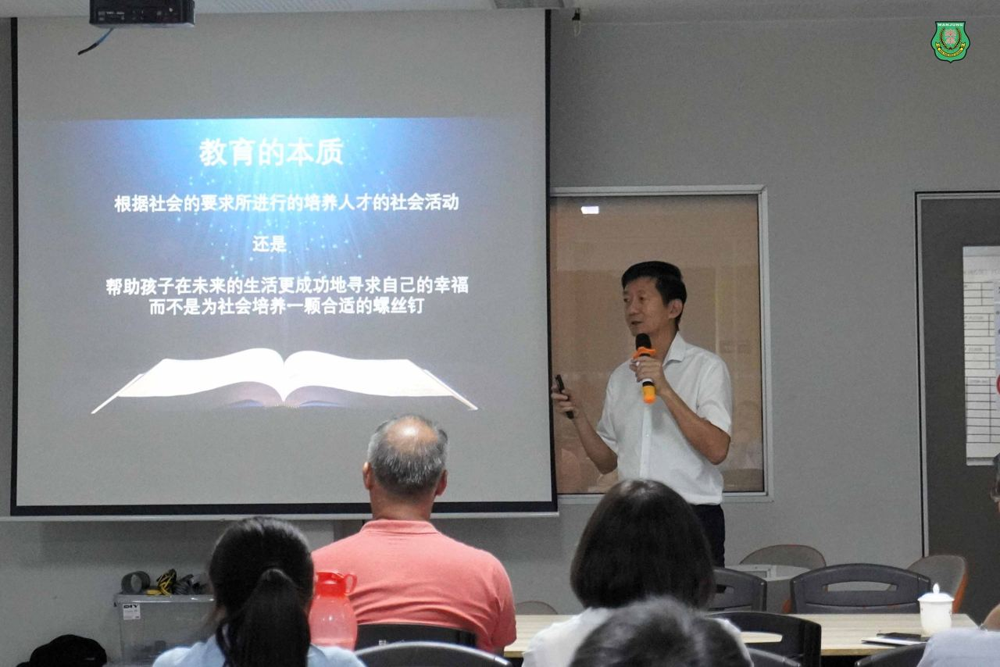
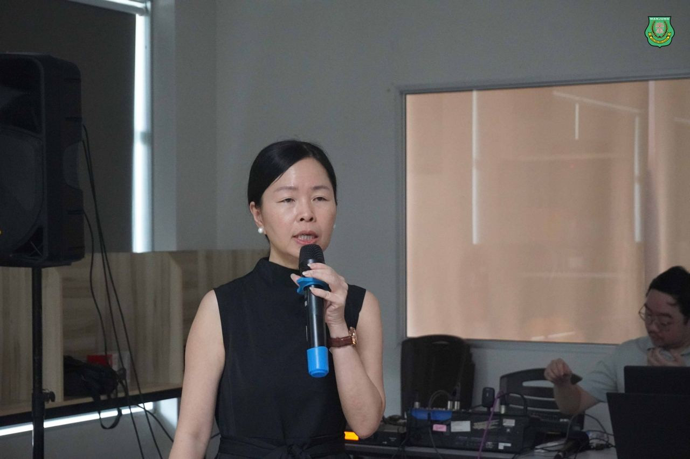
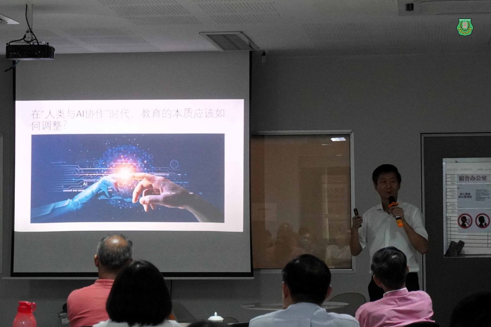
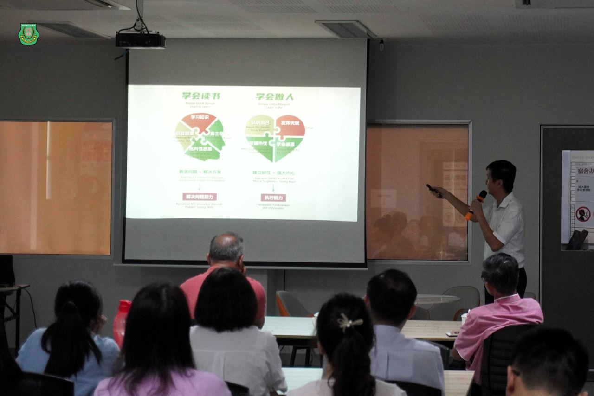
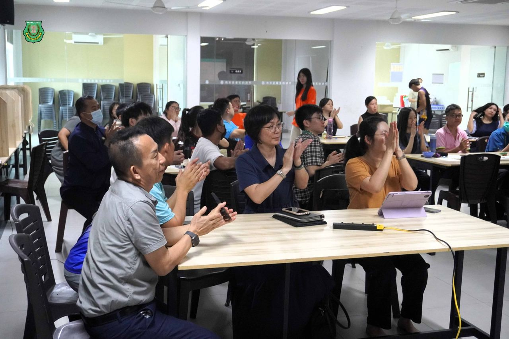
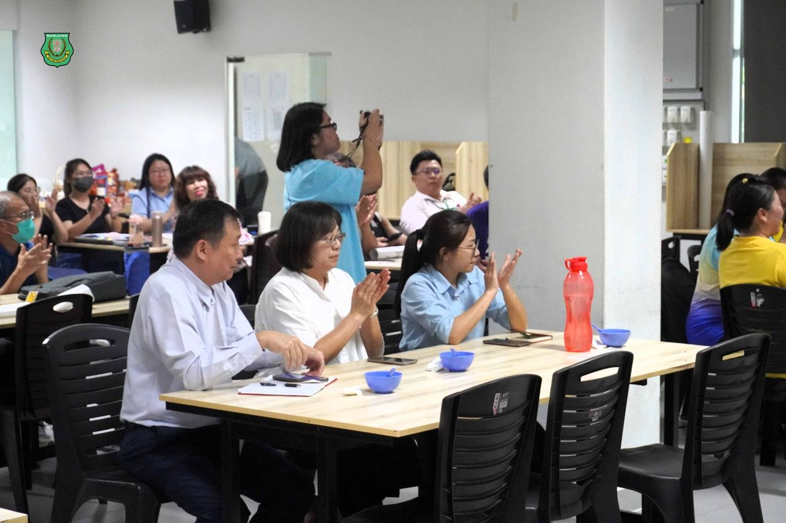
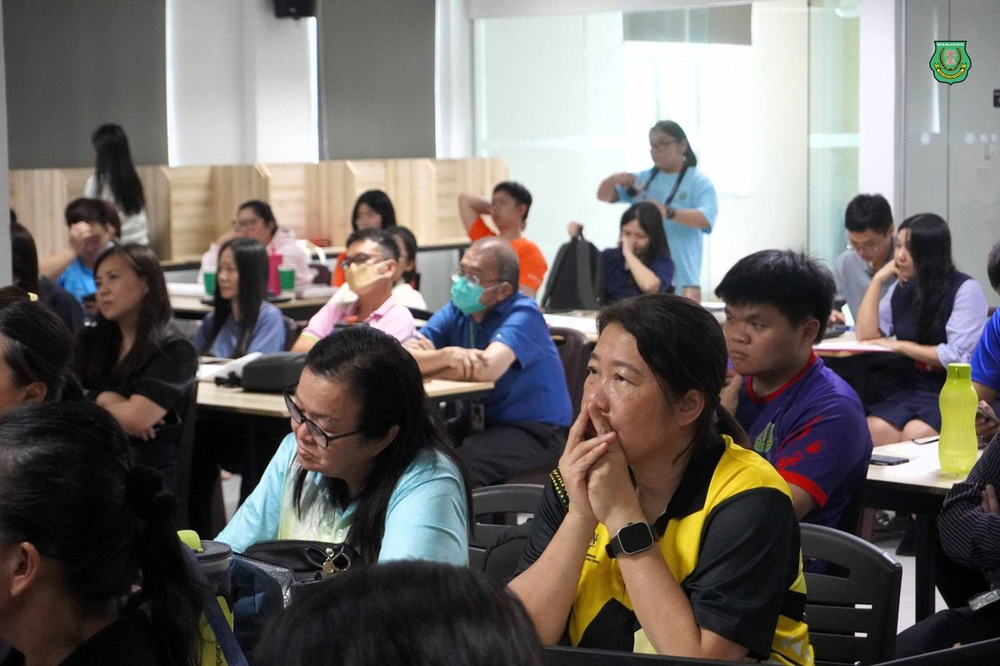
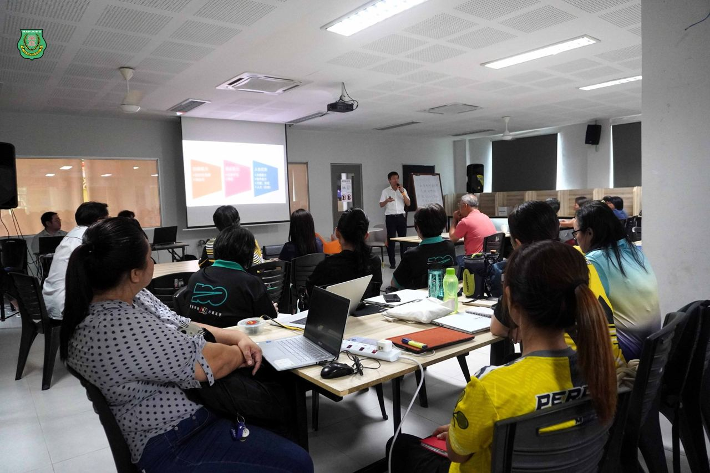

教育曙光·解锁未来
教育曙光·解锁未来
南华独中 AI 教育研习会聚焦未来教育方向
本校于日前举办 “2025 AI 教育研习会”，主题为 “教育曙光·解锁未来”，共吸引了来自8所华小校长与老师共27人、江沙崇华独中董事长拿督黄胜全、校长庄织华及其行政团队、本校董家教全员齐聚一堂，共同探讨 AI 时代的教育变革与发展方向，并由南华独中AI教学与应用部门提供AI教育工作坊。
南华独中校长陈丽冰博士：
教育本质不变，科技赋能教育
陈校长致欢迎辞中深刻点出了教育工作者在 AI 时代的责任与挑战。陈校长强调：“时代在变，教育的挑战前所未有。AI 带来了新的可能，但教育的本质，始终是‘人’——是温度、是情感、是使命。我们如何在数字时代坚守教育初心？如何让科技为教育赋能，而不是取代教育的灵魂？这需要我们一起思考、一起探索、一起走下去！”
南华独中一直以来都在积极探索 “人类+AI” 的教育模式，不仅关注科技如何提升教学效率，更希望借助 AI 培养学生的创造力、批判性思维和人文素养，确保科技发展不会让教育变得冰冷和机械化。
董事长颜登逸：
教育改革势在必行，培养 AI 时代的未来人才
在研习会上，颜董事长以“AI时代办学理念审势”深入解析了 AI 时代教育改革的核心方向。他指出：“教育的改革已不再是一个选项，而是一种必然。未来社会不再需要标准化人才，而是个性化、跨学科、多样化的学习路径。”
颜董事长强调，在 “人类+AI” 时代，人类的角色需要重新定义，未来最重要的不是单纯地掌握知识，而是培养 批判性思维、创造力、适应力及人类独有的情感与共情能力。他在演讲中提到：“当 AI 越来越像人类，人却正变成机器。即使 AI 仿真度接近人类的 99%，那 1% 的差异，恰恰是灵魂的居所。”
颜董事长认为，教育改革的方向应当朝向“培养 AI 无法取代的能力”，包括：
思维能力：批判性思维、创造力
适应能力：终身学习、韧性
人性优势：共情能力、协作能力、天赋与热忱
此外，颜董事长也分享了南华独中以中华文化为基础的办学理念，强调 “学会读书、学会做人” 的教育目标，致力于培养才德兼备、具备大格局与组织能力的未来人才。
在 AI 快速发展的背景下，南华独中以实际行动推动教育改革，将科技与人文相结合，确保教育的核心价值不被取代。新成立部门AI教学与应用为参与者提供AI Agent智能体、大语言模型提示词、一键生成海量题库、一键生成PPT、AI修改作文、定制校定专属AI助理等演示与操作，其高度实用性成功引起参与者兴趣。







